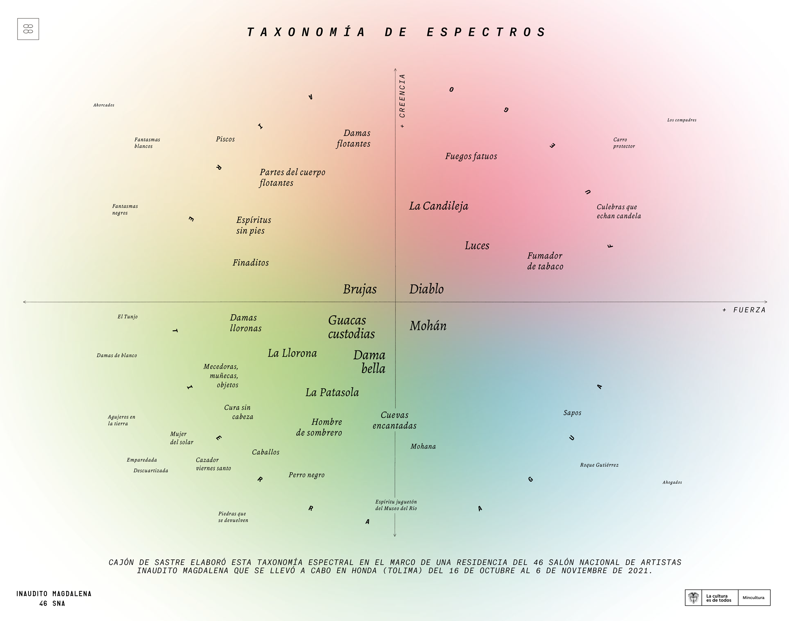
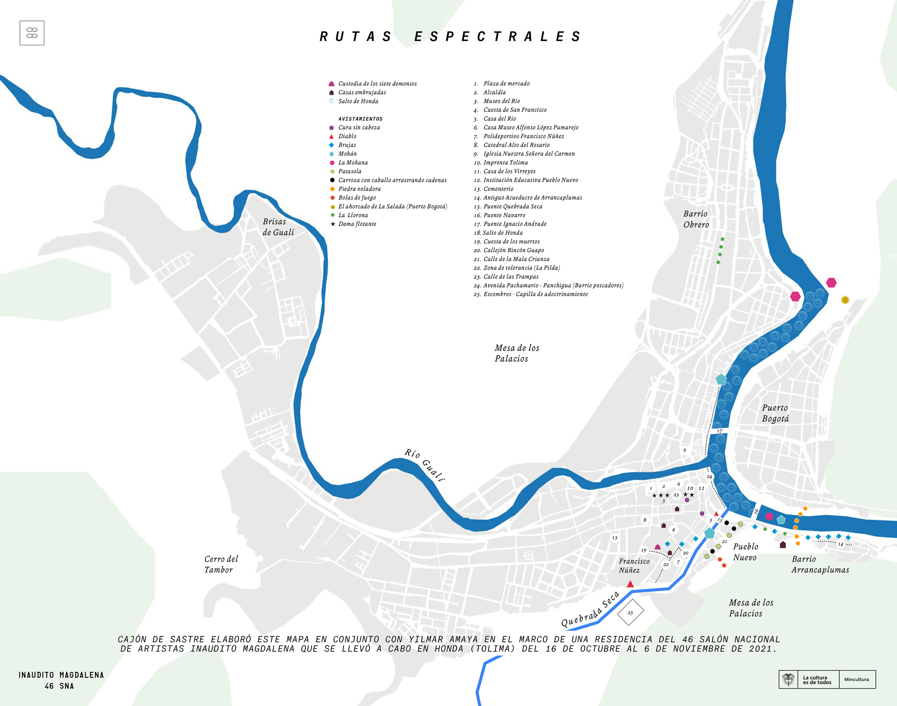

COMUNIDADES
ESPECTRALES
Ejercicios para investigar
seres y cosas extrañas
Catalina Vargas / Cajón de sastre
Publicación comisionada para el 46 SNA
Cajón de sastre
Catalina Vargas Tovar, Anggie Hernández, Verónica Restrepo, Andrés Toquica
Imprenta Tolima
Ricardo Nieto, Luz Helena Forero, Don José Hernández
Recorridos por Honda
Yilmar Amaya
Entrevistas
Raúl Rondón, Gregorio Francisco Martínez, Consuelo Santana, Luz Miriam Ramírez, Luisa Fernanda Manotas, Ernesto Ibañez, Elsa Forero, José Forero Leal (Máscara), Ester Lucía Camarasa, Blanca Botero
Participantes del laboratorio
Camila Serna, Juan Sebastián Carvajal, Diana Díaz, Andrey Daniel Marín, Lina Bobadilla, Biviana Rojas, Óscar Marín Alzate
Diseño gráfico
Taller Agosto
Agradecimientos
Jairo Hernández Burgos, Alberto Gómez, María Inés Hernández, Casa Museo Alfonso López Pumarejo, Jorge Rodríguez, Cindy Nataly Camacho, Laura González, Sofi Melo, Miriam Rico, Felipe Cortés
2021-2022
Enlaces
Formato digital de Comunidades Espectrales
Formato digital de la taxonomía de espectros
Formato digital de rutas espectrales de honda
Esta publicación es resultado de un residencia/laboratorio de edición realizado en Honda, Tolima junto a Anggie Hernández durante octubre y noviembre de 2021 en el marco del 46 Salón Nacional
de Artistas.
Las residencias de edición, parte del componente de formación del 46 SNA, involucran procesos de recolección y edición de contenido en diversos formatos: audio, texto, imagen… con el fin
de crear publicaciones y espacios de encuentro a partir de procesos editoriales.
Comunidades espectrales propone una serie de ejercicios para indagar y documentar a seres sutiles y fantasmales, seres fugaces y espectrales, como estrategia de investigación participativa. La publicación navega a partir del carácter
resbaladizo de sus aproximaciones y los múltiples aportes de habitantes de la ciudad de Honda, Tolima.
“La espectralidad es un tema amplio y de por sí inasible, es decir, condenado a no ser concluyente, a ser invisible, pero cercano a todo tipo de público y presente en la oralidad de múltiples maneras. Es un tema que permite una exploración
de las diferentes capas (materiales e inmateriales) que componen (como en un juego de superposiciones) el tejido social y las particularidades de un territorio. Es un tema que reconfigura los mapas, que revisa la historia de un lugar
(desastres naturales, violencia, accidentes), que permite que emerja lo oculto en el tiempo, en la rabia, en los rumores, en las tradiciones. La espectralidad permite acercarse al río (la naturaleza), a lo femenino y la ruralidad con otras
poéticas construidas desde el misterio, desde la pregunta, desde la escucha profunda, más que desde una lógica normalizada y homogenizante.”
Descarga: Comunidades Espectrales en .pdf

Descarga: Taxonomía de espectros en .pdf
Descarga: Rutas espectrales .pdf
Anggie Hernández, Catalina Vargas y Ricardo Nieto en la litografía Tolima
El mapa de rutas espectrales fue trazado con el apoyo de Yilmar Amaya
Entrevista a José Forero Leal (Máscara)
Talleres espectrales en la Casa Museo Alfonso López Pumarejo
Las últimas letras en la imprenta Tolima